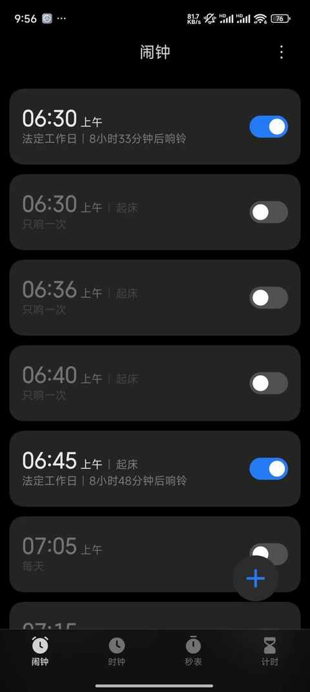
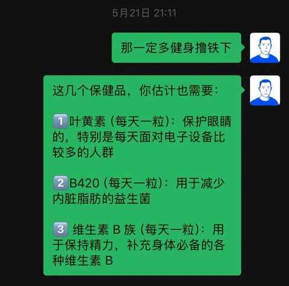
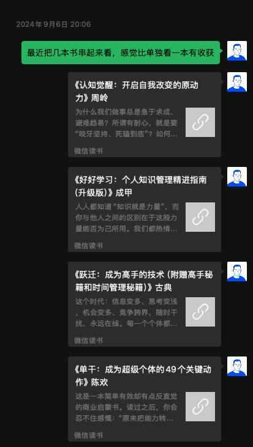
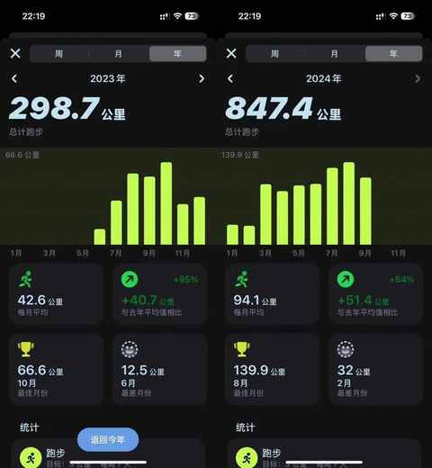

面对 35 岁：普通中年男人的 6 个切身感受
作为第一批 90 后，算上虚岁早已 35 岁，第一批 95 后也很快要年过三旬，时间很公平，所有人一视同仁。
岁月有自己的偏好，对于我来说实属是杀猪刀。

20 岁的我在总统府门前微笑，35 岁我在爬楼梯 40 分钟后微笑，15 年之后，有变的也有不变的。
人到中年，越来越能感受到：相比客观环境，专注自身和家庭能获得更多的确定性及更好长期收益。
下面内容不具有普遍性，仅 仅是 从个人的经验和视角出发而得出的 6 个切身感受，实在是不吐不快。
1️⃣ 生活愈发规律
不一定早睡，但一定会早起，很多时候会发现闹钟形同虚设，等你洗漱完闹钟都还没响。

炒菜怎么能不系围裙，更不能少了葱姜蒜。
2️⃣ 爹味偶尔上身
完全抑制不住分享过来人的经验，说之前丝毫不考虑对方是否需要是否冒犯到对方的边界等等，等回味过来的某句话不该说的时候，已经说了好几句类似的话。

最近是在没有了解到对方的需求情况下，特别喜欢给别人推荐书籍和播客节目，而且推荐理由写的很不具体。

3️⃣ 习惯单独运动
球类运动的频次减少，越来越喜欢一个即可完成的运动类型： 跑步、骑行、爬楼梯、跳绳、撸铁……

越来越能和钓鱼佬共情，每次出门跑步和骑行的过程中会在各个小河边发现钓鱼佬的踪迹，要不是钓鱼的运动强度偏低，说不定已经加入这个行列。
4️⃣ 往事跃入脑中
很多碎片化的记忆跃入脑中是毫无逻辑的，不需要特定的事情去触发：
在医院门口被出租车拒载，当时应该拍下拍照然后电话投诉！
高一的时候剃光头，帽子被摘掉，紧接着我就去追把我的帽子抢走的同学，可惜那时候跑的太慢，当时就应该苦练跑步的。
某次说错的话，做的蠢事等等。
5️⃣ 想吃各地美食
虽然饭量在一点点下降，但对各地美食的诉求与日俱增，不是在直播间网购，而是买上高铁票机票去一趟的那种，例如已经被种草许久的东北早市，今年一定找个时间去一趟！
6️⃣ 与万物和解
与缺点和解，接纳和接受自己的拧巴，择机再做改变。
与焦虑和解，日子还是要一天天认真的过。
与往事和解，每个人在每个时期都有自己的局限性，但还是要一点点学会用发展的眼光看问题。
总的来说没和解的更多，例如为啥新闻里面中 500w 的不是我 ……
人生的下半场才刚刚开始，以上内容： 如有雷同，纯属巧合！